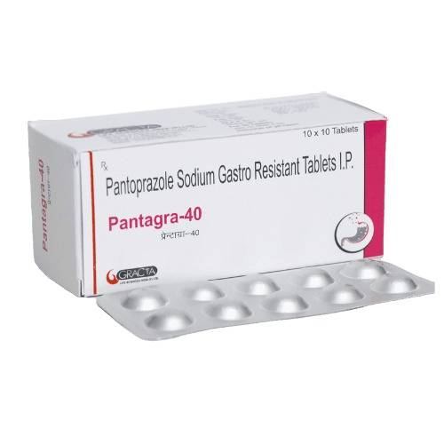
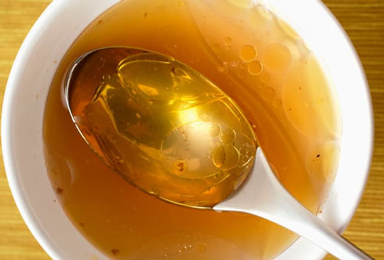

Your child’s nausea has turned to vomiting, and you want to help them fast. Luckily, bouts of vomiting in kids aren’t usually harmful, and they pass quickly.
Common causes are stomach viruses and sometimes food poisoning. Check in with your doctor if your child acts sick, or if you are worried.
Medication for Nausea And Vomit
 Over-the-counter medicines for vomiting are not recommended for kids. Those meds won’t help if a virus is the cause -- and it usually is. Fluids rather than drugs are the key. If vomiting is severe, though, doctors may prescribe something to prevent the nausea and vomitting.Best way to get relief from vomit is to be hydrated and to do liquid device-width:
- Signs of Dehydration: One of the best things you can do is watch for dehydration. Kids get dehydrated more quickly than adults. Watch your child for: acting tired or cranky, dry mouth, fewer tears when crying, cool skin, sunken-looking eyes, not urinating as often as normal, and when they do go, not peeing very much or urine that is darker yellow.
- Treating Dehydration:
- Liquid Diet:  When it’s been several hours since your child last vomited, you can begin a clear liquid diet beyond just water, electrolyte drinks, or oral rehydration solutions. Stick with liquids you can see through. They are easier to digest, yet they offer nutrients to give your child energy. Think clear broth, cranberry juice, apple juice. Popsicles and Jell-O can work well, too.
 To prevent and relieve dehydration, try to get your child to drink in very small amounts. Even if vomiting continues, they're still absorbing some of what you give them. Try
ice chips, sips of water, sports drinks, or oral rehydration solutions like CeraLyte, Enfalyte, or Pedialyte.
To prevent and relieve dehydration, try to get your child to drink in very small amounts. Even if vomiting continues, they're still absorbing some of what you give them. Try
ice chips, sips of water, sports drinks, or oral rehydration solutions like CeraLyte, Enfalyte, or Pedialyte.